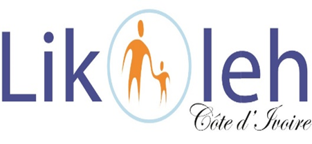

Inter-village sanitation and hygiene reinforcement project
Description: Detailed field information, outcomes, and testimonies for this project will be added here.



Description: Detailed field information, outcomes, and testimonies for this project will be added here.